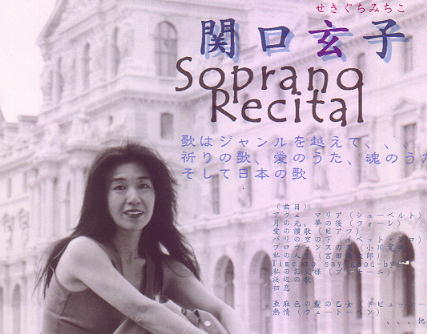

関口 玄子(せきぐち みちこ)
高松高校 昭和37年卒
(Last updated:2001)
プロフィール

上野音楽大学声楽科を卒業後、イタリア・ミラノに留学。
ジェノバで「フィガロの結婚」のスザンナを歌い好評を博す。
その後、世界各地でコンサートを重ねる。
日本でも、東京、四国、九州等の各地でコンサートを開く。
1998年・1999年 詩・水野隆、曲・ラッツォーニの「暦」「満天星」等を歌う。
2000年 郡上八幡や福岡で、バリトンの佐野文彦や
ピアノのすみこ・ラッツォーニたちと共演。
2001年、東京、高松で公演が開かれる。